This isn't just a clothing line — it's a platform. Kids submit original designs on the website. Quinn curates and picks the monthly winner. That design gets produced and shipped. The kid designer earns 1% of revenue. Every piece has a story and a young creator behind it.
12 of 20 ideas include a customization or personalization mechanic. Kids don't just wear — they create. The platform twist makes every purchase a co-creation moment.
The oversized silhouette isn't just a trend — it's a design advantage. More surface area = more room for patches, art, charms, and self-expression. Comfort and creativity aligned.
Charms, patches, limited drops, and numbered editions create a collection mechanic. Kids don't just buy clothes — they build a collection over time.
$18-28 price range sits between Cat & Jack ($8-12) and NUNUNU ($45+). The margin comes from unique design mechanics, not premium fabric alone.
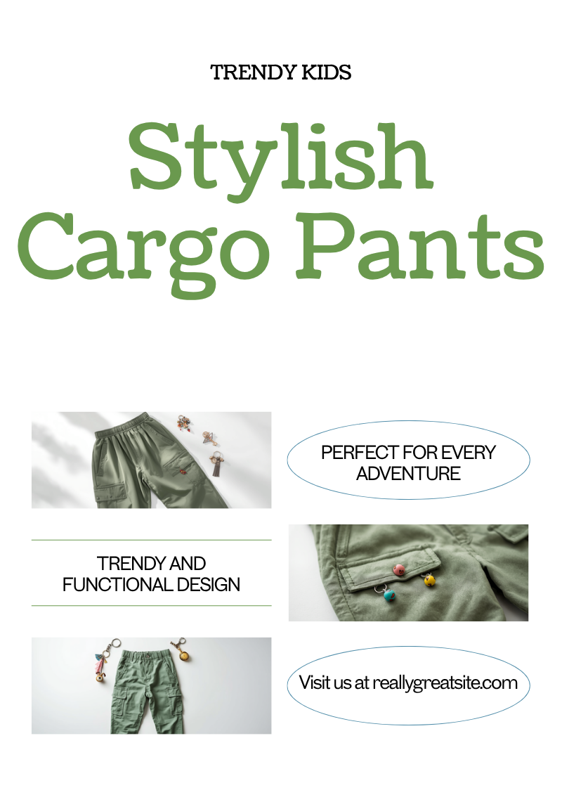
Wide-leg cargo pants for 9-year-old girls with metal loop attachment points along the cargo pockets and belt loops — purpose-built for collectible charms, keychains, beaded chains, and trinkets. The pants themselves are premium cotton in muted tones (sage, charcoal, oat), but the accessories turn them into a personalization platform.
This rides the Trinket Core wave that's been the fastest-growing kids accessory trend of 2025-2026. Every kid already collects charms and keychains — these pants give them a place to display them. The attachment loops are the product's moat: once a kid builds a charm collection around these pants, switching brands means losing the display system.
First move: launch with 3 colorways + a starter charm pack (5 charms). Sell refill charm packs seasonally. The pants are the platform; the charms are the recurring revenue.
Gap: Nobody combines cargo pants + charm attachment system for kids. The mechanic is the moat.
Rating: Simple
Cultural Trend Mining (#51) — identified Trinket Core as the dominant kids accessory trend. Cross-referenced with cargo pant silhouette dominance data. The Crocs Jibbitz model proves collectible accessories on wearables drive billions in recurring revenue.
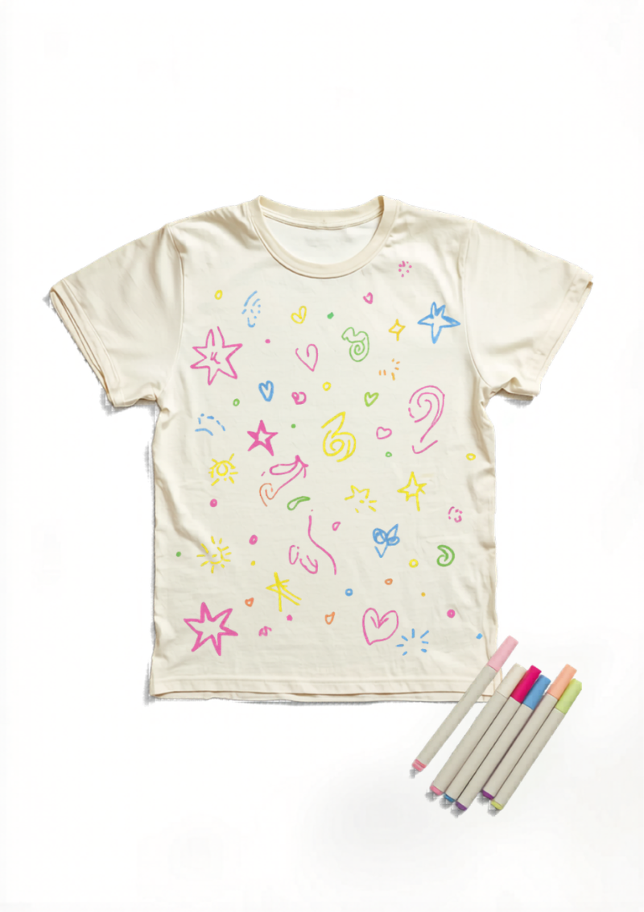
Oversized cream and white blanks — tees, hoodies, and joggers — that ship with a set of fabric markers designed for textile use. The garment isn't the product. The blank + the tools + the kid's imagination is the product. Every piece becomes a one-of-one original.
This is where the kid-creator platform gets physical. Kids can design digitally on the website AND draw directly on the actual clothing. The digital designs compete for the monthly winner slot; the physical markers let every kid customize their own pair immediately. Two pathways, same creative energy.
The margin story is beautiful: premium blanks cost $3-5 to source, fabric markers cost $2-3 for a set of 6, but the perceived value of "design your own" clothing is $22-28. The craft-kit mechanic also makes this a natural gift item — birthday party gold.
Gap: Nobody sells premium oversized blanks + textile markers as a fashion product, not a craft toy.
Rating: Simple
Mashup Method (#24) — combined art supplies + clothing categories. Validated by DIY craft kit market growth data and kids customization trend research. Crayola proves the concept exists; gap is in quality/positioning.
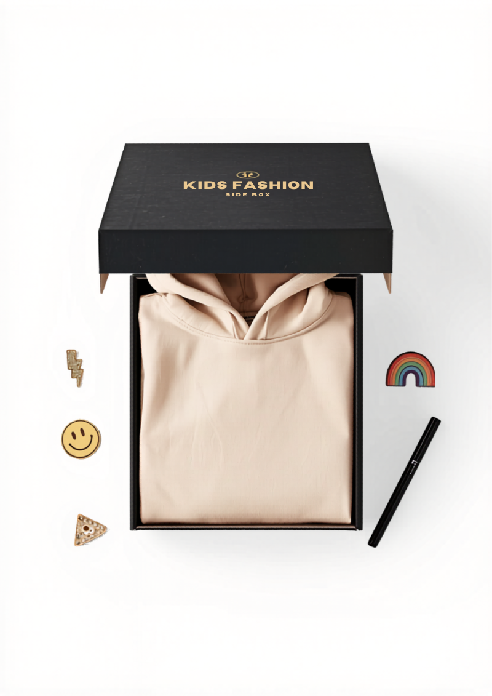
A monthly subscription box that delivers one oversized garment + a customization kit. January might be a sage hoodie with iron-on patches. February could be oat joggers with enamel pins and a fabric paint pen. March: a cream oversized tee with tie-dye supplies. Each box is themed, seasonal, and designed to build on the collection from previous months.
The subscription model solves two parent problems simultaneously: "my kid outgrows everything" (monthly fresh inventory) and "my kid is bored of her clothes" (each box is a new creative project, not just another garment). The customization kit turns unboxing into an activity — 30 minutes of engaged play per box, minimum.
This is the recurring revenue backbone of the brand. Each box includes a card featuring that month's winning kid-designer and their design story — tying the physical product back to the creator platform.
Gap: No subscription combines clothing + craft/customization kit. This is KiwiCo meets Stitch Fix.
Rating: Moderate
Mashup Method (#24) — combined subscription box model (KiwiCo) with fashion (Stitch Fix) and DIY customization. Kids subscription box market data validates growth trajectory. Cross-selling across months creates natural retention loop.
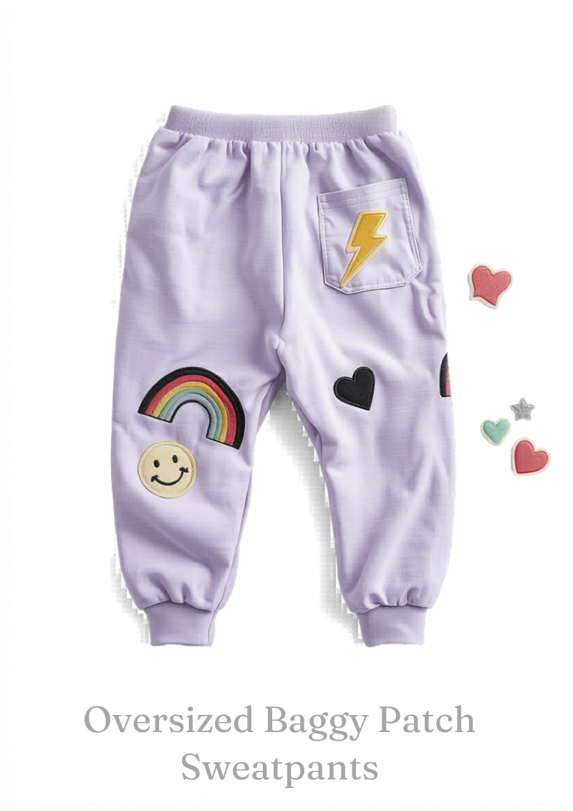
Oversized baggy sweatpants in dusty lavender, sage, and oat with sewn-in velcro zones on the thighs and back pockets. The velcro panels are purpose-built for swappable embroidered patches — a smiley face today, a lightning bolt tomorrow, a rainbow on Friday. The garment stays the same; the personality changes daily.
This solves a real JTBD for 9-year-olds: "I want to express my mood without having to explain it." Patches are non-verbal self-expression — lower stakes than words on a t-shirt, more personal than a generic print. Starter sets come with 6 patches; expansion packs sell for $6-8 and become the collectible engine.
The kid-creator platform angle: kids can design patches digitally, and winning designs get produced as limited-run patch packs. The community creates the accessory ecosystem.
Gap: Velcro-based swappable patch system doesn't exist in kids fashion. Iron-on is permanent; this is daily-changeable.
Rating: Simple
Jobs to Be Done (#4) — mapped Quinn's "express my personality without words" job. Validated by patch/badge customization growth data and tactical velcro market size as proof of mechanic durability.
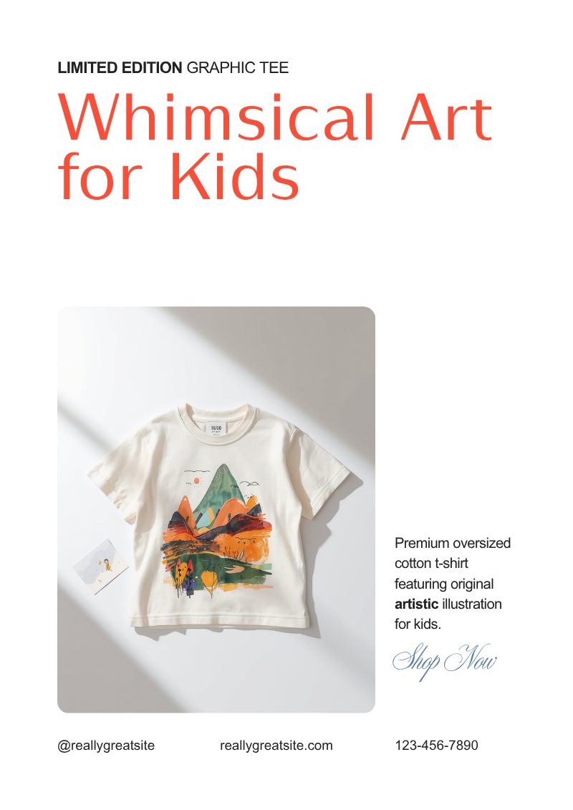
This is the flagship product of the kid-creator platform. Oversized boxy tees featuring original artwork submitted by kids through the website. Each monthly winner gets their design printed on a numbered limited run of 50. The tee ships with an artist bio card — the young designer's name, age, city, and a sentence about what inspired the design.
The numbered edition creates scarcity and collectibility. The artist bio card creates emotional connection. The kid-creator gets 1% of revenue and bragging rights. Parents buy for their kid and as gifts for their kid's friends. It's wearable art with a story.
Production path: DTG (direct-to-garment) printing on premium oversized blanks. No screen setup costs, no minimum runs. Print-on-demand is feasible but slightly lower quality; DTG small-batch is the sweet spot for 50-unit runs.
Gap: No platform lets kids submit designs, compete for selection, and earn revenue from their winning art on clothing.
Rating: Moderate
Premiumization (#56) — elevated basic tees through limited-edition artist collaboration mechanic. Validated by Threadless community model, DTG cost reduction data, and limited-edition DTC engagement metrics.
Borrow the streetwear drop model — limited quantities, surprise releases, collectible hang tags — and shrink it to kids. Each "drop" is 3-5 oversized pieces in a coordinated colorway, released every 6-8 weeks with only 50-100 units per piece. When it's gone, it's gone.
The collectible holographic hang tag becomes the trophy — kids keep them, trade them, hang them on their backpacks. The scarcity mechanic drives urgency: parents learn to buy on drop day or miss out. Email/text list becomes the primary marketing channel.
Tied to the kid-creator platform: each drop could feature that month's winning designer's work across all pieces in the collection.
Small-batch production (50-100 units). Lower inventory risk but requires tight production timing. Holographic tags need specialty print supplier.
Rating: Moderate
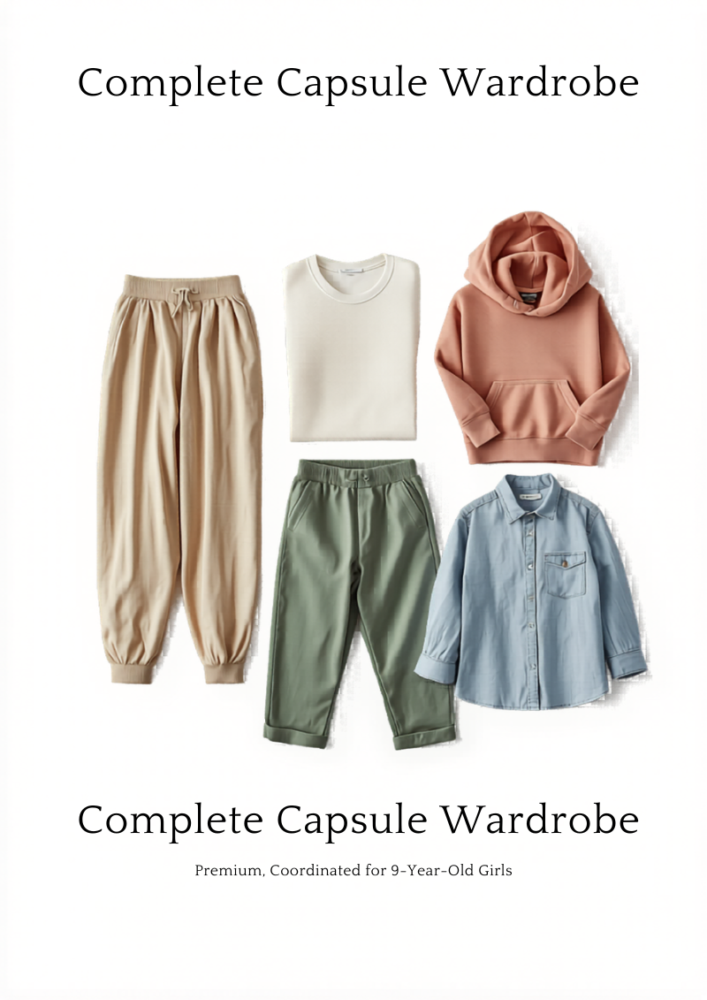
Five oversized pieces — joggers, wide-leg pants, tee, hoodie, and button-up — in a coordinated neutral palette that all mix-and-match into 15+ outfits. Sold as a complete set at a bundle discount. Eliminates decision fatigue for both parents ("what do I buy?") and kids ("what do I wear?").
Blue Ocean logic: every kids brand sells individual pieces and hopes you'll buy more. This flips the model — sell the whole mini-wardrobe as one decision. New colorway capsules release quarterly, and all capsules are backwards-compatible (sage Q1 works with oat Q2).
5-piece production per capsule. Size matrix across 5 items adds SKU count. Bundle packaging needed. Quarterly colorway drops require planning.
Rating: Moderate
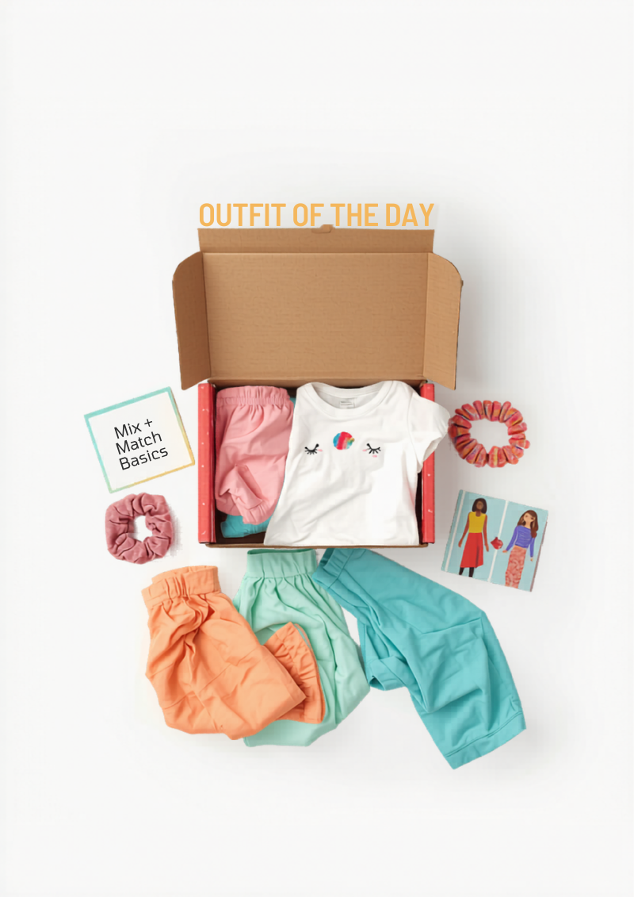
A curated box of mix-and-match oversized basics + accessories, designed specifically so kids can create "outfit of the day" content for TikTok and social. Includes styling cards showing 5 different outfit combinations from the same pieces, plus a mini ring light/phone stand for photo content.
This rides two cultural waves: kids' OOTD content is a top-3 category on TikTok, and parents are already filming their kids' outfits daily. The box gives them better content with better clothes. User-generated content becomes the marketing engine — every kid posting their OOTD is a brand ambassador.
Mix-and-match curation adds complexity vs single-item boxes. Styling cards need design each month. Content creation tools (ring light) sourced from AliExpress at $2-3/unit.
Rating: Moderate
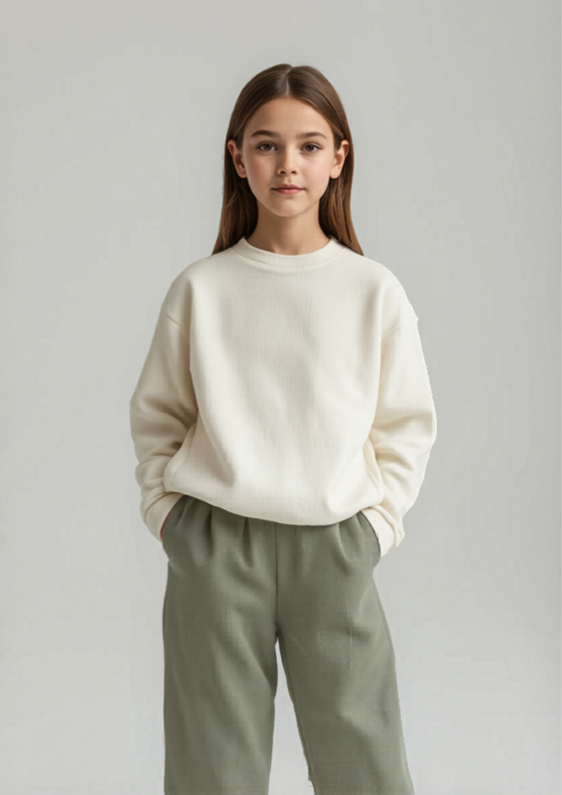
Oversized pieces in cream, sage, oat, fog, and mushroom with subtle texture differences — waffle knit, ribbed, brushed cotton, french terry. No logos, no graphics, no prints. The "clean girl" aesthetic adapted for 9-year-olds: elevated basics that look expensive but aren't costumey.
These are the base layer of the brand. While other products in the line add charms, patches, and art, these pieces prove the silhouettes and fabrics stand on their own. They serve the parent who wants quality and the kid who's starting to develop personal style beyond characters and sparkles.
Simple production — oversized basics in neutral fabrics. Multiple textures require sourcing from different fabric mills but standard construction. Easiest product in the line to manufacture.
Rating: Simple
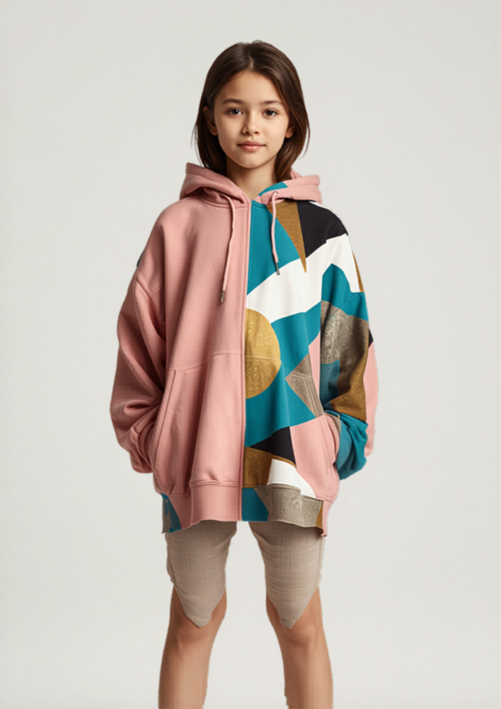
Two completely different designs in one oversized hoodie — flip inside-out and it's a new look. One side solid dusty pink; the other side bold geometric pattern in teal and gold. Doubles the wardrobe without doubling the spend. Kids love the "secret other outfit" mechanic — it becomes a personality switch.
Manufacturing is straightforward: double-layered construction with finished seams on both sides. Costs ~30% more than a single hoodie but sells for double the perceived value. Three colorway combos per season.
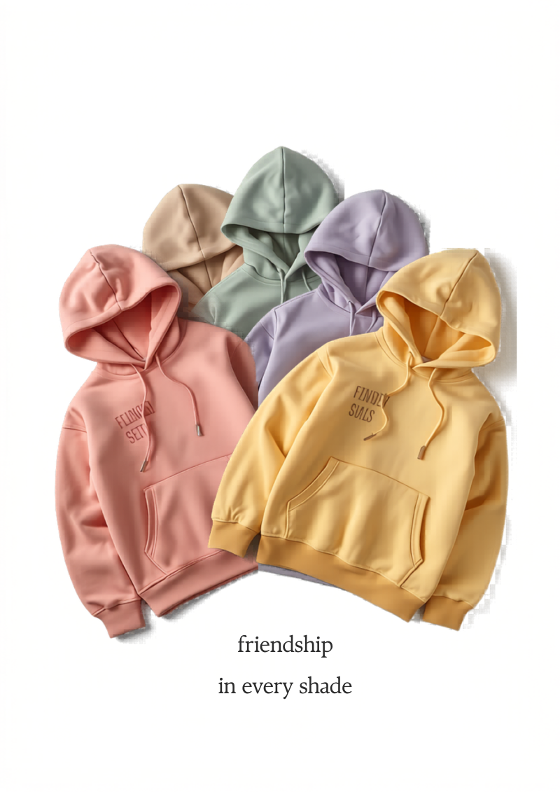
Matching oversized pieces in coordinated-but-different colorways — so friend groups can match without being identical. A set of 4 hoodies: dusty rose, sage, lavender, butter yellow. Same design, different color. Squad goals without the cringe of being twins.
This solves a specific social JTBD for 9-year-olds: "I want to belong but also be unique." Sell individually ($22) or as a 4-pack at a group discount ($75). The 4-pack is designed for birthday parties — the birthday girl picks her squad's colorways.
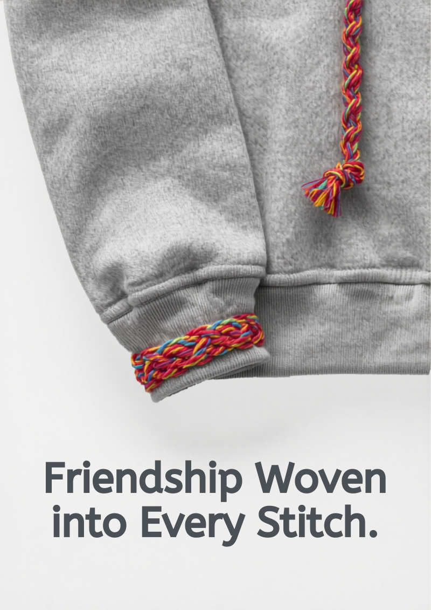
An oversized heather gray hoodie with woven friendship-bracelet-style details on the cuffs and hood drawstring. The braided multicolor cord replaces standard drawstrings; the cuffs have an embroidered pattern mimicking friendship bracelet weave. Handmade energy on a premium garment.
Friendship bracelets had a massive resurgence during the Taylor Swift Eras Tour era and haven't faded. This takes that emotional connection — "my best friend made this for me" — and builds it into the hoodie itself. Premium feel with emotional resonance.
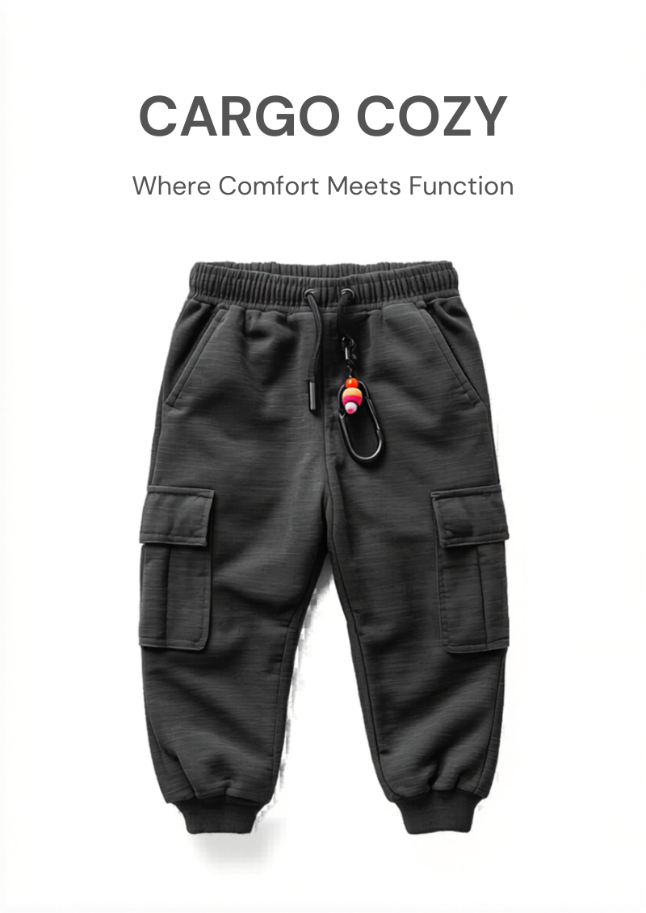
Baggy sweatpants meets cargo pants — the comfort of french terry with the utility and style of cargo pockets. Elastic cuffs, relaxed oversized fit, with two cargo pockets on each leg. Detachable carabiner clips and a beaded keychain accessory come included.
This is the SCAMPER "Combine" play: take the #1 kids comfort garment (sweats) and add the #1 kids style garment (cargo) into one hybrid. The carabiner clips connect to the Charm Cargo charm ecosystem — accessories are cross-compatible across the line.
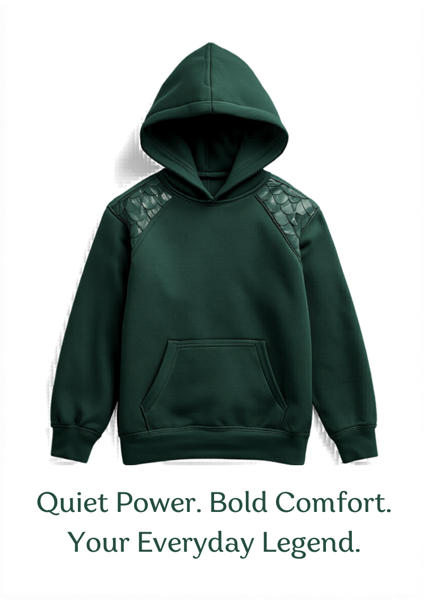
Oversized hoodies with subtle character-inspired design details — not licensed characters, but "inspired by" themes. Dragon scale textured fabric on the shoulders. Astronaut reflective patches on the chest. Ocean wave stitching on the cuffs. The kid knows what it references; adults just see a cool hoodie.
This avoids the licensing cost trap while tapping into the imagination play that 9-year-olds live in. Each "character" hoodie has a name and a tiny backstory printed on the inner tag — world-building through clothing.
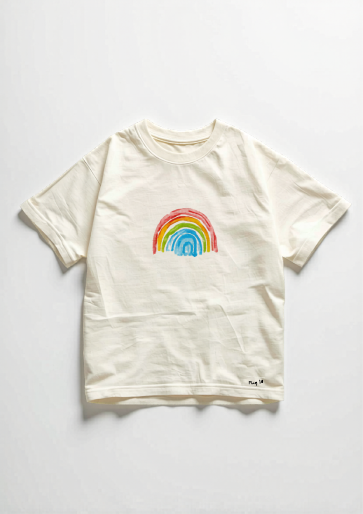
Oversized tees with original illustrations by kid artists — limited runs of 50. A "Designed by Mia, age 10" tag at the hem. Kids designing for kids. This is the Artist Collab Tees' grassroots sibling: while Artist Collab features curated monthly winners, Anti-Uniform Tee runs smaller, more frequent micro-drops from the community.
The differentiator: the art style is intentionally naive and authentic — charming kid art, not polished illustration. The imperfection IS the aesthetic. Each tee is a wearable gallery piece from a real kid creator.
Adjustable wide-leg pants with button tabs at the hem and hidden elastic waist adjustment. Designed to work for 2+ years as the kid grows — roll the cuffs at one length this year, let them out next year. The intentionally oversized fit means sizing is forgiving from the start.
This directly addresses the #1 parent pain point with kids clothing: they outgrow everything in 3-6 months. By building adjustability into the design, these pants deliver twice the wear-life at a modest premium over standard pants. Sustainability angle: fewer clothes in the landfill.
An oversized base tee with snap buttons along the sleeves and hem. Snap-on panels sold separately: a floral sleeve extension, a striped pocket panel, a gingham hem addition. The base is one garment; the panels make it ten different outfits.
Borrowed from modular furniture design (IKEA, USM) — one base, infinite configurations. The panels become the collectible element. Seasonal panel packs drop quarterly. The base tee is the platform; panels are the recurring revenue.
Premium modal/cashmere blend oversized sweats — joggers and crewneck — at $28. The "I can't believe these are kids' sweats" upgrade. When parents touch the fabric, the sale is made. No gimmicks, no accessories — pure fabric quality play.
This targets the parent who buys Vuori or Lululemon for themselves and winces putting their kid in polyester blends. Modal/cashmere feels luxury but costs only $2-3 more per unit than standard cotton fleece. The margin comes from the perception gap between cost and touch.
Wide-leg cargo pants with butterfly-shaped pocket flaps + matching oversized baby tee. Y2K revival adapted for 9-year-olds. The butterfly shape is cut into the pocket flap itself — structural, not a print. Comes in lilac, butter yellow, and sage.
Y2K aesthetic is confirmed as a dominant kids fashion trend for 2026. This takes the most iconic Y2K symbol (butterfly) and integrates it into the construction rather than just printing it on. The butterfly flap is a conversation starter and Instagram moment.
Intentionally exposed seams, reverse-printed graphics, and raw edges — the "perfectly imperfect" oversized line. Looks like you got dressed in the dark and it works. Tees, hoodies, and joggers with construction details that are normally hidden turned into design features.
This is the SCAMPER "Reverse" play. Every other brand hides construction. This brand celebrates it. The exposed stitching, raw hems, and inside-out printing create an unmistakable aesthetic that can't be replicated by mass-market brands because it looks like a manufacturing defect to anyone not in on the concept.
This workshop applied 8 ideation methods from the Full-Stack Ideation toolkit (100 methods) against a sharp prompt refined through Stage 0 research. The prompt: "Oversized, baggy, comfortable clothing for 9-year-old girls made unique through customization, personalization, collectible accessories, and unexpected design details. Cool self-expression without growing up too fast. DTC at $18-28."
38 raw ideas were generated, scored on 6 criteria (Originality 20%, Market Size 20%, Margin Potential 20%, Visual Appeal 15%, Manufacturability 15%, Research Backing 10%), and filtered to 20 survivors.
| Method | Ideas Generated | Survivors | Hit Rate |
|---|---|---|---|
| JTBD (#4) | 5 | 3 | 60% |
| SCAMPER (#21) | 7 | 4 | 57% |
| Analogous Inspiration (#15) | 5 | 2 | 40% |
| Cultural Trend Mining (#51) | 6 | 4 | 67% |
| Premiumization (#56) | 4 | 2 | 50% |
| Packaging Innovation (#58) | 4 | 0 | 0% |
| Blue Ocean (#9) | 3 | 1 | 33% |
| Mashup Method (#24) | 4 | 4 | 100% |
Key insight: Mashup Method produced 100% survivors — combining two categories consistently yields the most original and commercially viable concepts. Packaging Innovation produced 0 survivors because packaging alone doesn't differentiate clothing; it needs to be bundled with a product innovation.
The US kids clothing market is approximately $37B (2026), with the 7-12 age segment representing ~$12B. DTC brands capture an estimated 8-12% of the market, growing at 15% YoY vs 3% for traditional retail.
Key market signals:
| Brand | Price Range | Positioning | Gap |
|---|---|---|---|
| Cat & Jack (Target) | $8-15 | Mass market basics | No personality, no customization |
| Primary.com | $12-16 | Quality basics, every color | Fitted, not oversized. No creative angle. |
| NUNUNU | $45-60 | Premium minimalist cool | Right vibe, wrong price for mass adoption |
| H&M Kids | $6-12 | Trend-forward affordable | Fast fashion quality, no brand loyalty |
| Rylee + Cru | $30-50 | Artist-designed premium | Skews younger (baby/toddler focus) |
| Quinn's Closet | $18-28 | Oversized comfort + kid-creator platform | THIS IS THE WHITE SPACE |
The platform twist transforms Quinn's Closet from a clothing brand into a creator economy for kids. The model:
This model has precedents: Threadless (adult), Redbubble (adult), and LEGO Ideas (product design). The kid-specific version — with Quinn as creative director — is the differentiator.
The product line has been designed for low-to-moderate manufacturing complexity: